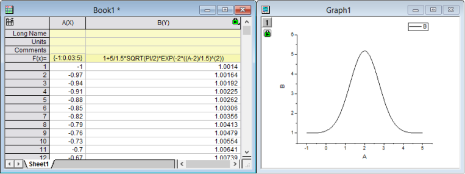
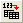

FAQ-690 Zwei kurze Beispiele für den Dialog Werte setzen
SCV-quick-example
Letztes Update: 04.11.2016
Der Dialog Werte setzen ist ein vielseitiges Hilfsmittel zum Durchführen von mathematischen Operationen bei Arbeitsblatt- oder Matrixdatensätzen, Definieren von Variablen oder Vorverarbeitung von Daten mit LabTalk-Skript. Wenn Sie sich weiterführend über dieses Hilfsmittel informieren möchten, empfehlen wir folgende Themen:
-
Im Folgenden finden Sie zwei einfache Beispiele, die Ihnen einführend die Verwendung des Dialogs Werte setzen zeigen sollen.
| Hinweis: Es wurde eine vereinfachte "Zellensyntax" eingeführt, die nicht in den Versionen 2016 und älter verwendet werden kann. Die folgenden zwei Beispiele verwenden die ältere Syntax. Um zu sehen, wie das erste schnelle Beispiel mit der neueren Syntax aussieht, lesen Sie Zwei schnelle Beispiele. |
Werte setzen für eine einzelne Spalte
Das folgende kurze Tutorial zeigt Ihnen, wie Sie diesen Dialog verwenden, um Daten für eine simulierte Gaussian-Kurve zu erzeugen.
- Öffnen Sie eine neue Arbeitsmappe, indem Sie auf die Schaltfläche Neue Arbeitsmappe
 auf der Symbolleiste Standard klicken.
auf der Symbolleiste Standard klicken.
- Markieren Sie Spalte A, klicken Sie mit der rechten Maustaste darauf und wählen Sie Spaltenwerte berechnen im Kontextmenü aus, um den Dialog Werte setzen zu öffnen.
- Geben Sie {-1:0,03:5} im Bearbeitungsfeld Spaltenformel ein und klicken Sie dann auf die Schaltfläche Anwenden. Spalte A sollte mit einer Reihe von Zahlen gefüllt sein.
- Dann wird eine der Navigationsschaltflächen verwendet, damit Sie einen Ausdruck für die zweite Spalte ohne Schließen des Dialogs eingeben können. Klicken Sie auf die Schaltfläche Weiter
 . Sie sehen, dass Spalte B im Arbeitsblatt markiert ist.
. Sie sehen, dass Spalte B im Arbeitsblatt markiert ist.
- Geben Sie jetzt 1 + (5/(1,5*sqrt(PI/2)))*exp(-2*((col(a)-2)/1,5)^2) im Bearbeitungsfeld Spaltenformel ein und wählen Sie Auto in der Auswahlliste Neu berechnen.
- Klicken Sie auf OK. Der Dialog Werte setzen wird geöffnet. Die Ergebnisse werden im folgenden Arbeitsblatt angezeigt.
(Wenn Sie ein Liniendiagramm der Spalte B erstellen, erhalten Sie ein ähnliches Diagramm wie dem neben der Arbeitsmappe.)
- 
- Klicken Sie doppelt auf die Spaltenbeschriftungszeile F(X) der Spalte B und ändern Sie die Formel in 1+(5/(1,5*sqrt(PI/2)))*exp(-2*((col(a)-2)/1,5)*2). Der Wert in Spalte B wird automatisch aktualisiert.
(Klicken Sie auf die Schaltfläche Neu skalieren . Das Diagramm wird ebenfalls aktualisiert.)

 |
Origin unterstützt einen Teilbereich einer Spalte als Funktionsargument in dem Dialog Werte setzen.
Zum Beispiel: Um die Summe eines Teilbereichs von i-3 bis i+3 in Spalte A zu berechnen (wobei "i" der Zeilenindex ist), können Sie eine Formel in dem Bearbeitungsfeld Spaltenformel eingeben.
Total(col(A)[i-3:i+3])
|
| Hinweis: Wenn Sie i und j im Dialog Werte setzen oder in der Spaltenbeschriftungszeile F(x)= verwenden, müssen Sie für sie Kleinbuchstaben verwenden. Die Großbuchstaben I und J werden als Spaltenkurznamen des Arbeitsblatts interpretiert. |
Werte setzen für mehrere Spalten
Das folgende kurze Tutorial zeigt Ihnen, wie Sie diesen Dialog verwenden, um Daten für mehrere Spalten gleichzeitig zu erzeugen.
- Erstellen Sie ein neues Projekt, indem Sie auf die Schaltfläche Neues Projekt
 auf der Symbolleiste Standard klicken.
auf der Symbolleiste Standard klicken.
- Klicken Sie auf die Schaltfläche Mehrfachimport ASCII , um die Dateien F1.dat und F2.dat aus dem Verzeichnis <Origin>\Samples\Import and Export\ zu importieren. Wählen Sie im Dialog impASC die Option Neue Arbeitsmappen öffnen in der Auswahlliste Import-Modus.
- Es werden zwei Arbeitsmappen erstellt mit den Namen F1 und F2. Klicken Sie auf die Schaltfläche Neue Arbeitsmappe auf der Symbolleiste Standard, um eine weitere Arbeitsmappe zu erstellen.
- Klicken Sie bei aktiver 3. Arbeitsmappe auf die Schaltfläche Neue Spalten anhängen
 , um eine Spalte hinzuzufügen. Markieren Sie alle Spalten, wählen Sie Spalte: Werte für mehrere Spalten festlegen im Hauptmenü oder klicken Sie mit der rechten Maustaste, um das Kontextmenü aufzurufen und Werte für mehrere Spalten festlegen auszuwählen. Der Dialog Werte setzen wird geöffnet.
, um eine Spalte hinzuzufügen. Markieren Sie alle Spalten, wählen Sie Spalte: Werte für mehrere Spalten festlegen im Hauptmenü oder klicken Sie mit der rechten Maustaste, um das Kontextmenü aufzurufen und Werte für mehrere Spalten festlegen auszuwählen. Der Dialog Werte setzen wird geöffnet.
- Erweitern Sie das untere Bedienfeld durch Klicken auf die Schaltfläche Skripte zeigen
 . Geben Sie unten die Skripte im Bearbeitungsfeld Skript vor Anwenden der Formel ein,
. Geben Sie unten die Skripte im Bearbeitungsfeld Skript vor Anwenden der Formel ein,
range r1=[F1]F1!wcol(j); //"j" is the column index. range r2=[F2]F2!wcol(j);
- Geben Sie im Bearbeitungsfeld Spaltenformel (r1+r2)/2 ein.
- Wählen Sie Optionen: Formelzelle direkt bearbeiten, um die Option zu deaktivieren.
- Wählen Sie Optionen: Formeltext... und geben Sie (F1+F2)/2 im Dialog Formeltext ein. Klicken Sie dann auf OK.
- Klicken Sie auf OK im Dialog Werte setzen. Die Ergebnisse werden im Arbeitsblatt aufgeführt und (F1+F2)/2 in der Spaltenbeschriftungszeile F(x) statt der Formel angezeigt.
Origin-Version mind. erforderlich: 9.1 SR0
Schlüsselwörter:Dialog Werte setzen